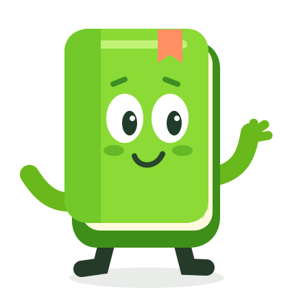

A place to keep going
Featured courses, a warm welcome and progress when completion tracking is enabled.
Meet LearnLingo: a theme that makes learning feel lighter, brings your brand to life and lets AI help you customize.

From the first sign-in to the next course, an experience that invites learners to keep going.
Featured courses, a warm welcome and progress when completion tracking is enabled.
The course header uses the name, summary and image the teacher already sets up in Moodle.
Colors, icons and components with personality, with optional integration with the XP Pessoal plugin.
A language school, a university or your team's training program. LearnLingo wears your institution's colors.
A fresh green with a thirst for learning.
Good to have you here, Alex.
"I want a homepage in my school's colors." Connect your Moodle to ChatGPT or Claude, describe the changes you want and confirm everything before publishing.
You describe. Your brand, your audience and what you want to change.
AI prepares. Homepage, colors, copy, styles and footer.
You approve. Saving requires confirmation and administrator permissions.
The connection to ChatGPT or Claude uses an optional Moodle plugin. LearnLingo also works without AI.
The proposal combines blue, a welcome message and a featured courses area.
Local simulation, not connected to your Moodle.
Export the prompt with your theme settings, talk to ChatGPT or Claude and import the reviewed JSON into LearnLingo.
A new visual setup wizard, one decision at a time.
Discover the proposal and explore each step.
Concept preview of PR #4, not yet merged into the main version. The learner area step is conditional; the flow has four or five steps.
Yes. LearnLingo is open source, published under GPL v3 or later. You can download, use and adapt the theme under the license terms without purchasing a LearnLingo license.
No. LearnLingo works normally without AI. To customize it through conversation, connect your Moodle to ChatGPT or Claude using the integration plugin, which respects permissions and requires confirmation before applying changes. You can also export and import settings as JSON.
Repository version 1.5.12 declares Moodle 4.5 as its minimum requirement and depends on the Boost theme. Before updating your environment, check the current code requirements and validate the theme on a test copy of your Moodle.
LearnLingo brings a playful visual style to Moodle through colors, buttons, courses and progress. Activities remain Moodle activities, and XP display requires the optional local_personalxp plugin. It is not a Duolingo product and does not automatically include every feature of a language app.
The wizard shown here is part of PR #4, which was open when checked on November 1, 2026. It is not yet part of the main version. Follow the PR for its current status and pending tests.
Follow PR #4 ↗Start with LearnLingo and make the next visit
feel like "it's good to be here".